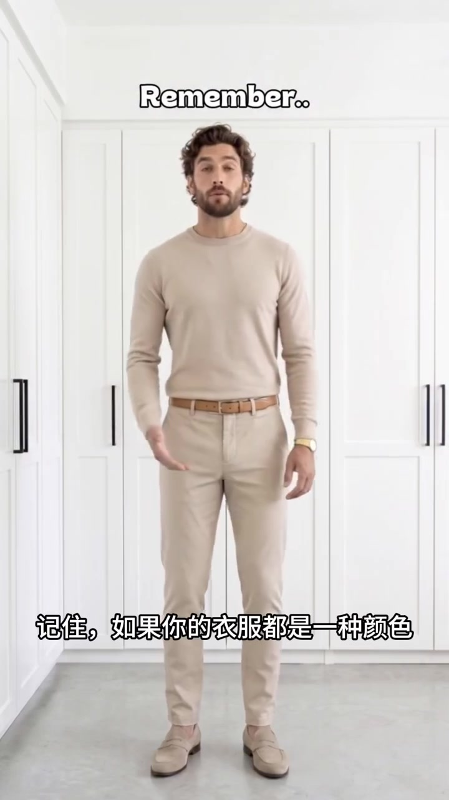
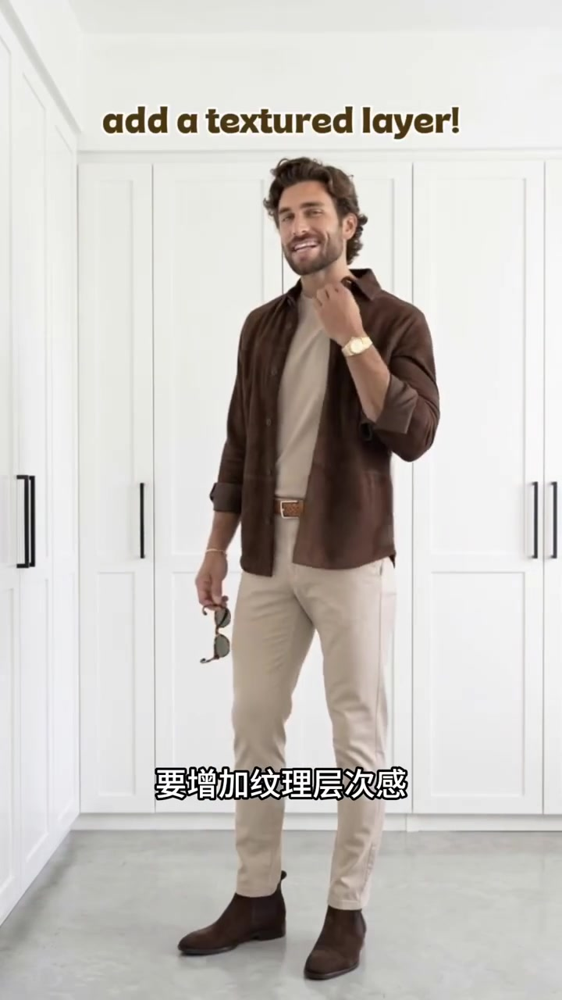
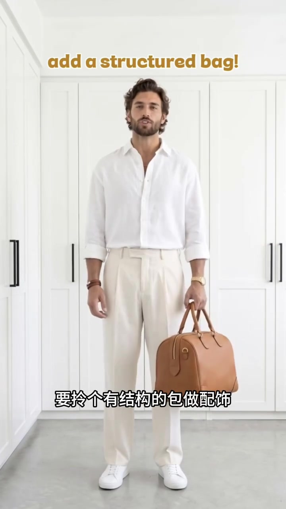
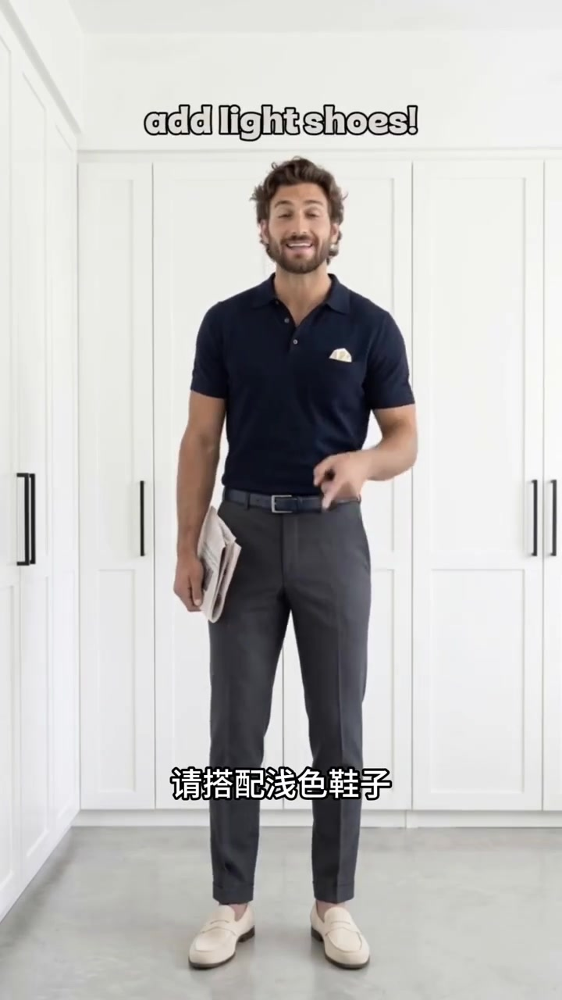
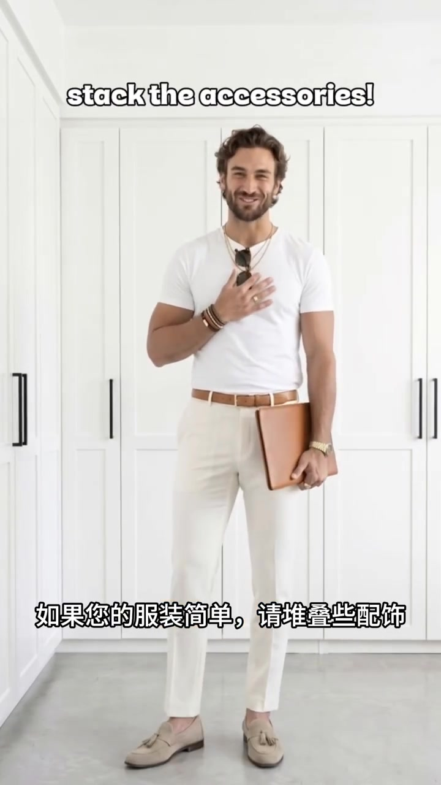

先把问题摆出来：全身只有一种颜色
视频没有铺垫，人物直接穿着米色针织衫、长裤和便鞋站到镜头前。上衣与裤装几乎落在同一色域，干净利落，却也缺少视觉起伏。
一句“记住”之后，画面开始用连续换装回答：不必推翻基础色，只要在材质、轮廓和小面积细节上动手。

第一步：用材质层次打破平面感
镜头一切，人物在浅色内搭外加了一件深棕色衬衫式外套。颜色仍然收敛，但开放的门襟、不同面料和深浅变化立刻把上半身分成前后层次。
画面字幕给出的动作是“增加纹理层次感”。重点不是再加一种抢眼颜色，而是让相近色之间有材质和明度差。

第二步：让包袋提供明确轮廓
接着是白衬衫与米白长裤。人物手里多了一只棕色硬挺手提包，方正轮廓和皮革颜色同时成为视觉锚点，让原本轻淡的搭配有了重量。

第三步：深色衣裤，用浅色鞋收尾
第三套把重心转到深色：藏蓝色上衣搭配炭灰长裤，随后用浅米色乐福鞋提亮脚下。浅色只占很小面积，却把深色造型从上到下拉开了层次。
这是一条具体示范，不是对所有深色穿搭的普遍定律；鞋款还要服从场合、裤长与整体正式度。

最后：简单造型可以叠加配饰
结尾回到白 T 恤和浅色长裤。项链、手链、腕表、墨镜与棕色手拿包逐一进入画面，基础单品没有变化，信息量却集中在上半身和手部。
短片在这里结束，没有继续解释数量与取舍。实际照做时，与其把所有配饰一次戴齐，更稳妥的读法是：从一到两件与腰带、鞋或包呼应的配饰开始。

转录说明：原视频以英语口播配中英画面字幕。下方保留 Whisper small 的全部中文识别分段；其中“项目”等词与画面语义不符，应视为自动识别误差，本文叙述以可见画面字幕为辅助证据。